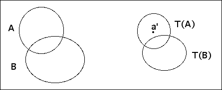

| Now we relate the Euclidean contraction factor of |
| T:R2 → R2 |
| to the Hausdorff contraction factor of |
| T:K(R2) → K(R2) |
| defined by T(A) = {T(x,y): for each (x,y) in A}. |
| Prop. 1 If T has Euclidean contraction factor r, then for all compact sets A and B in the plane |
| h(T(A),T(B)) ≤ r⋅h(A,B) |
| Proof Let h(A,B) = k. We want to show |
| T(A) ⊆ (T(B))r⋅k |
| and |
| T(B) ⊆ (T(A))r⋅k |
| That is, for every point |
|  |
| For every point |
Return to Convergence of determinisitc IFS.